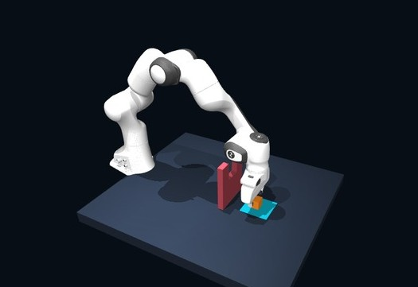

The cube clears.
The arm collides.
Four gate trials ended when link5 touched a post during lowering.
15.03–44.00 Nmeasured force / 0.05 N limit
OPEN EXPERIMENTS / MUJOCO × JEV
One robot. Five physical tasks.
A closer look at what language-driven control can do — and where it fails.
Measured simulator state → intent → action

Two independent policies.
Every completed failure counted.
01 / EXPLORE THE LAB
Pick a task, then watch the original demonstration. Every movement comes from JEV decisions and physical contact.
Simulation-time playback; API waits are omitted. New task videos are captured from the formal evaluation and end with a labeled two-second still. Original task videos use separate demonstration seeds.
02 / MEASURED, NOT ASSUMED
Ten fixed seeds for each task and policy. Shared physics and success checks. Independent rule baseline. Two frozen campaigns.
| Task | JEV | Rule | JEV Wilson 95% |
|---|
Ten trials are a small sample. Even 10/10 does not guarantee future success. These results describe the evaluated scenes, not general-purpose manipulation.
03 / UNDERSTANDING FAILURE
Seven failed trials in the new 40-episode campaign. Their original outcomes, measurements and boundaries are preserved.
Four gate trials ended when link5 touched a post during lowering.
Two JEV trials requested +Y while the measured grasp direction was −Y. The object was never grasped.
One JEV response selected an option below the maximum probability. That action was not executed.
| Task / policy | Seed | Decision | Evidence & boundary |
|---|
04 / INSIDE THE LOOP
JEV receives structured simulator measurements. Physical success is checked independently of what the model says.
Object poses, tool position, finger contacts and geometric relationships.
JEV selects a task-specific intent: approach, grasp, carry, lower or release.
A second JEV decision selects X, Y, Z directions and a gripper command.
Cartesian control, real contact, measured feedback and independent evaluation.
Structured state, no camera input. No rule fallback for JEV. Evaluated in MuJoCo; real-robot generalization remains untested.
05 / OPEN & REPRODUCIBLE
Python 3.11 · MuJoCo · Franka Panda
Run the rule baseline locally, or bring a TypeSafe key for JEV.
# Loose-fit insertion
robojev --task peg_insert --policy rule
# Language-driven obstacle transport
robojev --task obstacle_pick_place --policy jev